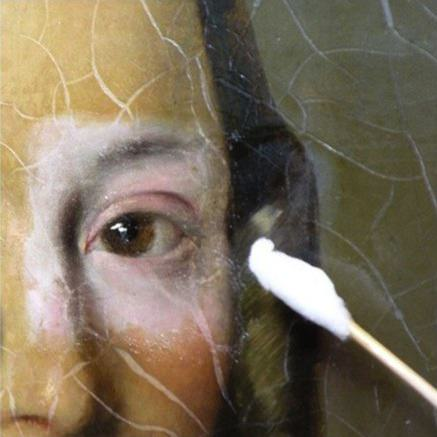
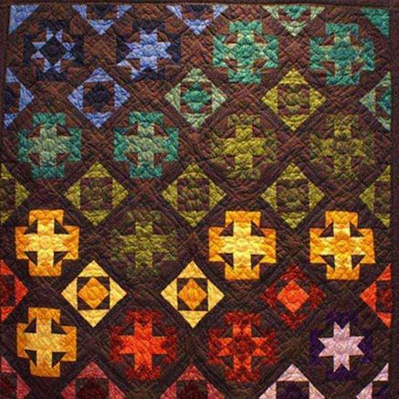

-
Réfection de fauteuils
Restaurez vos sièges de style avec des techniques traditionnelles : sangles, ressorts, crins… et l'aide d'un professeur diplômé.
-

Nettoyage de tableaux
Du nettoyage et de la remise en état, pour faire revivre des tableaux anciens.
-
Cartonnage encadrement
Réalisation d'objets en carton : boîtes, sous-main, cadres photo, pieds de lampe…
Mise en valeur des gravues, photos, aquarelles, cartes postales.
-
Couture
Du fil + des aiguilles, des ciseaux + du tissu, tout pour confectionner un vêtement à votre mesure, avec le concours d'une couturière diplômée.
-

Tapisserie à l'aiguille
un atelier de tapisserie au point pour coussins, avec des conseils de l'animateur.
-

Patchwork
A propos des points, des carrés et des quitts pour créer des ouvrages décoratifs.
Echanges et partage de techniques entre membres du groupe.